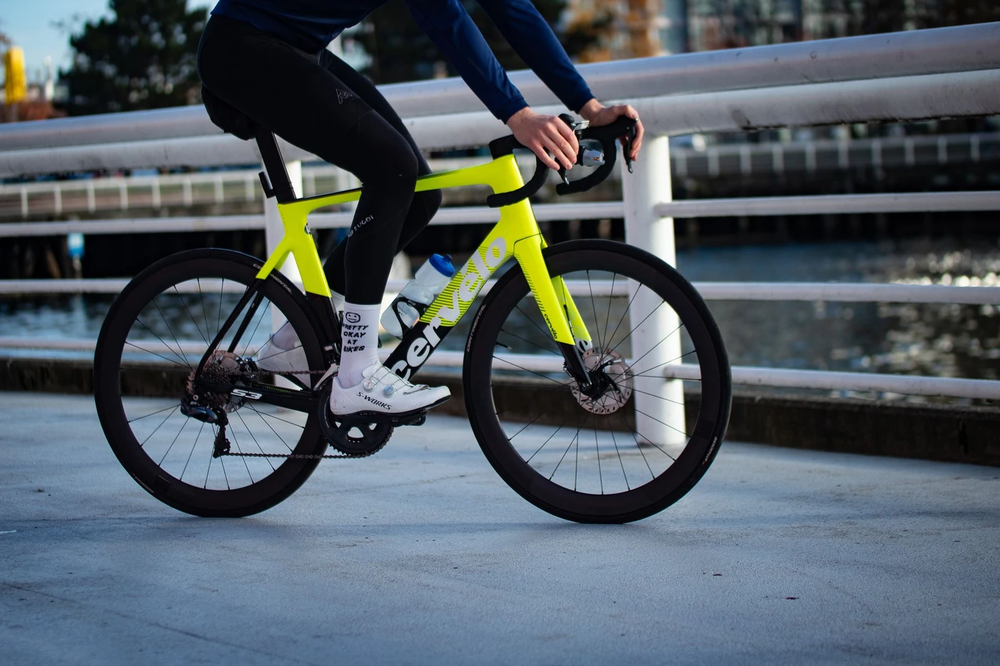

역사

에어로다이나믹 을 위해서라면 뭐든지 하는 캐나다 브랜드.
1995년 필 화이트와 제라드 브루멘이라는 두 엔지니어에 의해 설립되었다.
이들은 1986년부터 자전거와 인간 동력 이동수단에 대해 연구해왔는데, 한 이탈리아 탑레벨 선수가 자신을 스폰해주던 제조사가 그가 원하는 타임 트라이얼 바이크를 위해 공력성능과 기술개발에 투자할 의지가 없다는 사실을 깨닫고 화이트와 브루멘에게 '최고의 타임 트라이얼 바이크를 만들어 달라'며 프로젝트를 의뢰하게 된다
그리고 이 콤비는 공돌이 정신에 입각하여 기존 로드바이크를 분석, 기술과 성능에 대해서 시장논리에 타협하지 않는 프레임을 완성한다.